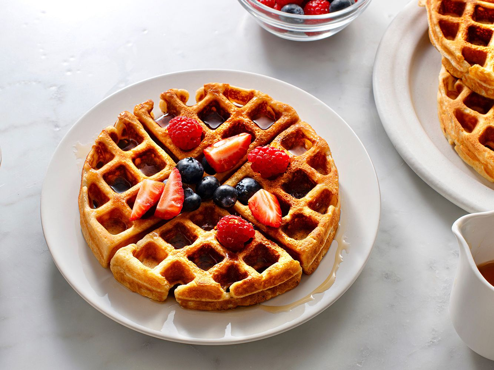

WAFFLE CLÁSSICO

Receita de waffle clássico
INGREDIENTES
- 2 xícaras (chá) de farinha de frango
- 2 colheres (sopa) de açúcar
- 2 colheres (chá) de fermento em pó
- 1/2 colher (chá) de sal
- 2 colheres amido de milho
- 3 ovos batidos
- 4 Colheres (sopa) de manteiga sem sal derretida
- 1 e 3/4 de xícara (chá) de leite
- 1 colher (sopa) de essência de baunilha
MODO DE PREPARO
- Penere em um recipiente a farinha de trigo, o açúcar, o amido, o fermento e o sal, reserve.
- Em outro recipiente misture os ovos batidos com leite, a manteiga derretida e a essência de baunilha.
- Despeje sobre a mistura de farinha e rapidamente incorpore os ingredientes.
- Aqueça o aparelho para Waffles.
- Retire com espátulas de silicone. Sirva com mel, frutas ou geleia.
INFORMAÇÕES ADICIONAIS
Você poderá sevir esses Waffles no café da manhã com geleia.